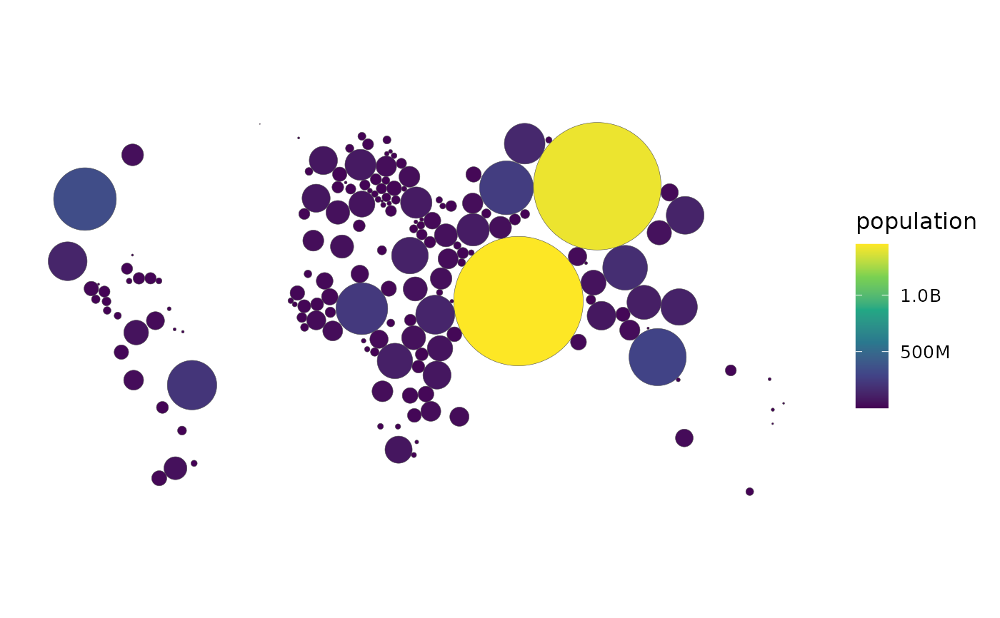

Resizes countries by weight (population, GDP, ...) via the optional
cartogram package, defeating the "big empty countries dominate the eye"
bias of world choropleths.
Usage
cartogram_map(
data,
weight,
type = c("contiguous", "dorling", "noncontiguous", "flow"),
fill = NULL,
projection = "equal_earth",
...
)Arguments
- data
An
sfmap-ready frame.- weight
The column to resize by (unquoted).
- type
"contiguous"(default),"dorling","noncontiguous"or"flow"."flow"is the Gastner-Seguy-More flow-based algorithm from the optionalcartogramRpackage – the current state of the art for contiguous cartograms, and seconds rather than minutes where the diffusion-based"contiguous"method is slow.- fill
Optional fill column (unquoted); defaults to
weight.- projection
Projection; an equal-area CRS is recommended. See
world_map()for the projections available.- ...
Passed to the underlying
cartogram::cartogram_*()function (e.g.itermax, orkfortype = "dorling"– seedorling_map()), or tocartogramR::cartogramR()fortype = "flow".
Which algorithm
"contiguous" (Dougenik) and "dorling"/"noncontiguous" come from
cartogram. "flow" comes from cartogramR and implements the
Gastner-Seguy-More flow-based method, which is both the current state of the
art and far faster than diffusion-based approaches – prefer it for
contiguous cartograms when cartogramR is available.
Cartograms fail quietly: an under-converged one looks plausible while still
misrepresenting the areas it exists to make honest. Pass a larger itermax
if the result still looks close to the true map.
References
Gastner, M. T., Seguy, V. & More, P. (2018). Fast flow-based algorithm for creating density-equalizing map projections. Proceedings of the National Academy of Sciences 115(10), E2156-E2164. doi:10.1073/pnas.1712674115
Examples
# \donttest{
if (requireNamespace("sf", quietly = TRUE) &&
requireNamespace("rnaturalearth", quietly = TRUE) &&
requireNamespace("cartogram", quietly = TRUE)) {
attach_geometry(countryatlas::world_snapshot$countries, geometry = "sf") |>
cartogram_map(population, type = "dorling")
}

# }